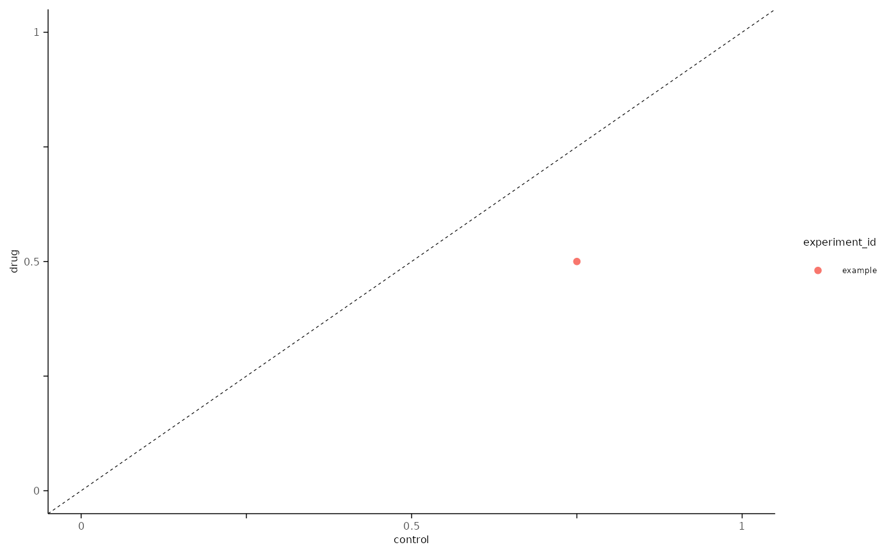

This will plot the maximum value specified by metric across two conditions.
Usage
plot_max_probability(
df,
x_axis_condition,
y_axis_condition,
metric = "probability",
xmax = 1,
ymax = 1,
x_label = NULL,
y_label = NULL
)Arguments
- df
Data Frame or Tibble with the following columns:
cell_id
experiment_id
condition
P() metric from
create_histogram_df(), e.g. density, probability.
- x_axis_condition
Character, condition value to use on x-axis, e.g. "control".
- y_axis_condition
Character, condition value to use on y-axis, e.g. "drug".
- metric
Character, P() metric to plot, e.g. density, probability. Defaults to "probability".
- xmax
Optional integer, maximum x-value to plot, values are rounded the nearest 1. Default is
1, ymin is fixed at0.- ymax
Optional integer, maximum y-value to plot, values are rounded the nearest 1. Default is
1, ymin is fixed at0.- x_label
Optional character, custom label for the x-axis. Default
NULL, will use the column name fromx_axis_condition.- y_label
Optional character, custom label for the y-axis. Default
NULL, will use the column name fromy_axis_condition.
Note
This function is intended to use with aggregated data in a long format that is extracted
from create_histogram_df.
See also
analysis_evoked_ap()for a workflow example that aggregates create_histogram_df.
Examples
library(magrittr, include.only = "%>%")
bins <- seq(0.5, 39.5, by = 1)
n_bins <- length(bins)
conditions <- c("control", "drug")
n_conditions <- length(conditions)
# example output from create_histogram_df()
simple_tbl <-
tibble::tibble(
cell_id = "cell",
experiment_id = "example",
condition = rep(conditions, each = n_bins),
h_bin_centers = rep(bins, n_conditions),
probability = 0,
density = 1
) %>%
dplyr::mutate(probability = dplyr::case_when(
condition == "control" & h_bin_centers %in% c(1.5, 11.5) ~ 0.75,
condition == "drug" & h_bin_centers %in% c(1.5, 11.5) ~ 0.5,
.default = 0
))
plot_max_probability(
simple_tbl,
x_axis_condition = "control",
y_axis_condition = "drug",
metric = "probability",
xmax = 1,
ymax = 1
)
